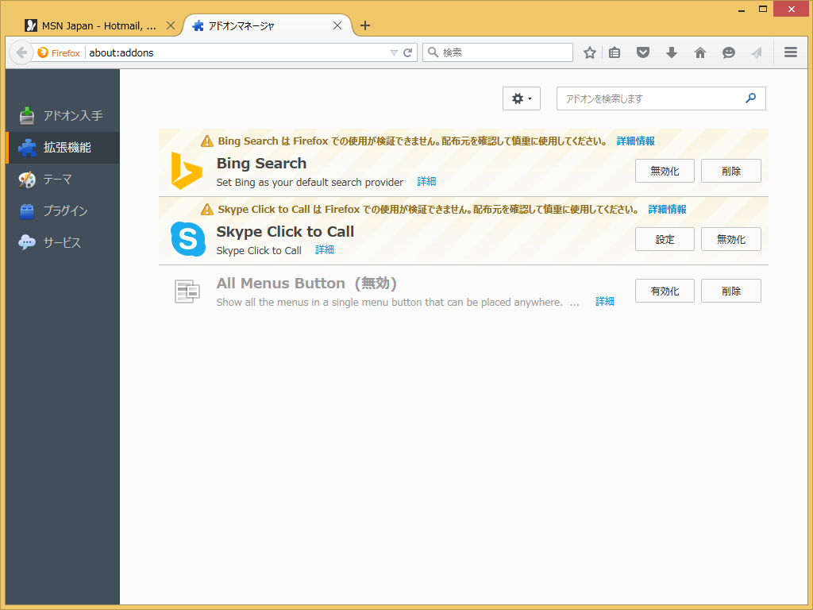
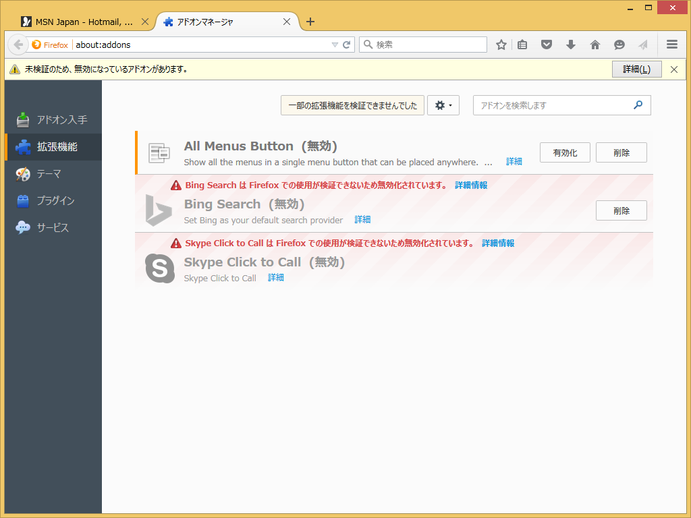
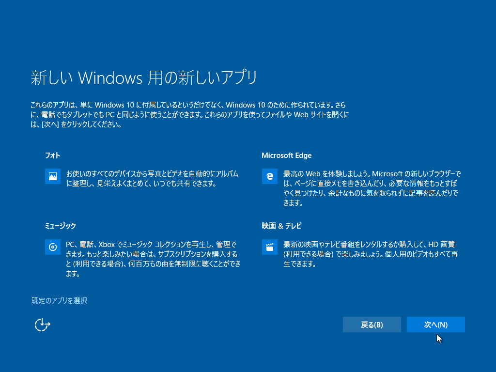
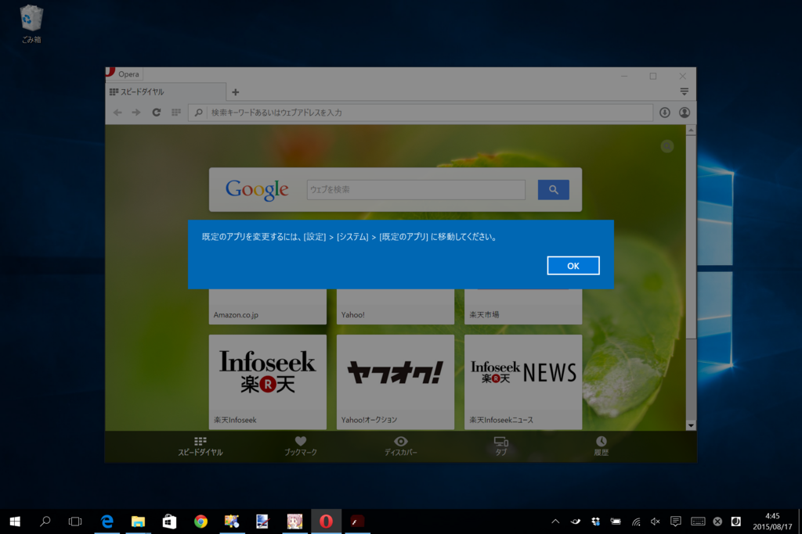
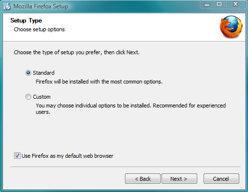
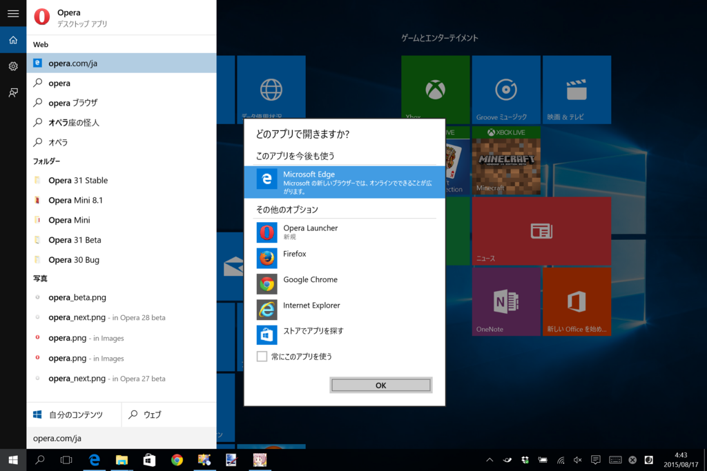

Firefox アドオンと署名、ついでにデフォルトブラウザー
公開日：
Mozilla verifies and "signs" add-ons that follow a set of guidelines to ensure that users' information will not be stolen or manipulated. All add-ons hosted on addons.mozilla.org undergo this review process in order to be verified and signed. Add-ons hosted on other sites will need to follow the same guidelines in order to be signed by Mozilla.
Add-on signing targets only malware and browser hijacking. It does not control or censor the content that you choose to see.
Firefox 40（stable）

警告の表示。
Firefox 41（beta）

アドオンの無効化（通知バーによるお知らせ付き）。
おまけ：デフォルトブラウザー

ユーザの選択肢という点では、Microsoft の Windows 10 は同社の過去のバージョンと比較しても、はるかに及びません。以前の設定やデフォルト設定を維持することは技術的には可能ですが、新しい Windows 10 のアップグレード体験とユーザインタフェースでは、そのことがはっきり分かるようになっているわけではなく、簡単にできるようにもなっていません。
まぁ、言いたいことはわかる（ぁ
でも、代わりに案内されている方法（Windows 10 向け Firefox: Firefox をデフォルトブラウザに選択または戻す方法 | Mozilla Japan ブログ）がブサイクなのには閉口する*1。もっといい方法がなかったんだろうか。

そもそもこんなことになったのは、Windows 10 ではプログラムから既定のアプリを変更できなくした（ユーザーが明示的に変更するようにプロセスを改善）せいだ。これは「サードパーティー製アプリが勝手に既定のアプリを変更するのを防止する」ためのもので、最近 Mozilla が自分のブラウザーに対して施している改善と本質的には変わらない。

こんな感じのインストーラーはもうやめていきましょうぜってことやね*2*3。

ちなみに、新しい Web ブラウザーをシステムに追加すると、次回利用時に既定のアプリを選択できるのはこれまで通り*4。これは十分わかりやすいと思う。
確かに“アップグレード体験”*5については、“はっきり分かるようになっているわけではなく、簡単にできるようにもなってい”ないことに同意するけどね。自分もうっかりデフォルトブラウザーを「Microsoft Edge」にしちゃったクチだし。もっとも、「Mozilla Firefox」からではなく「Google Chrome」からなのだが……。